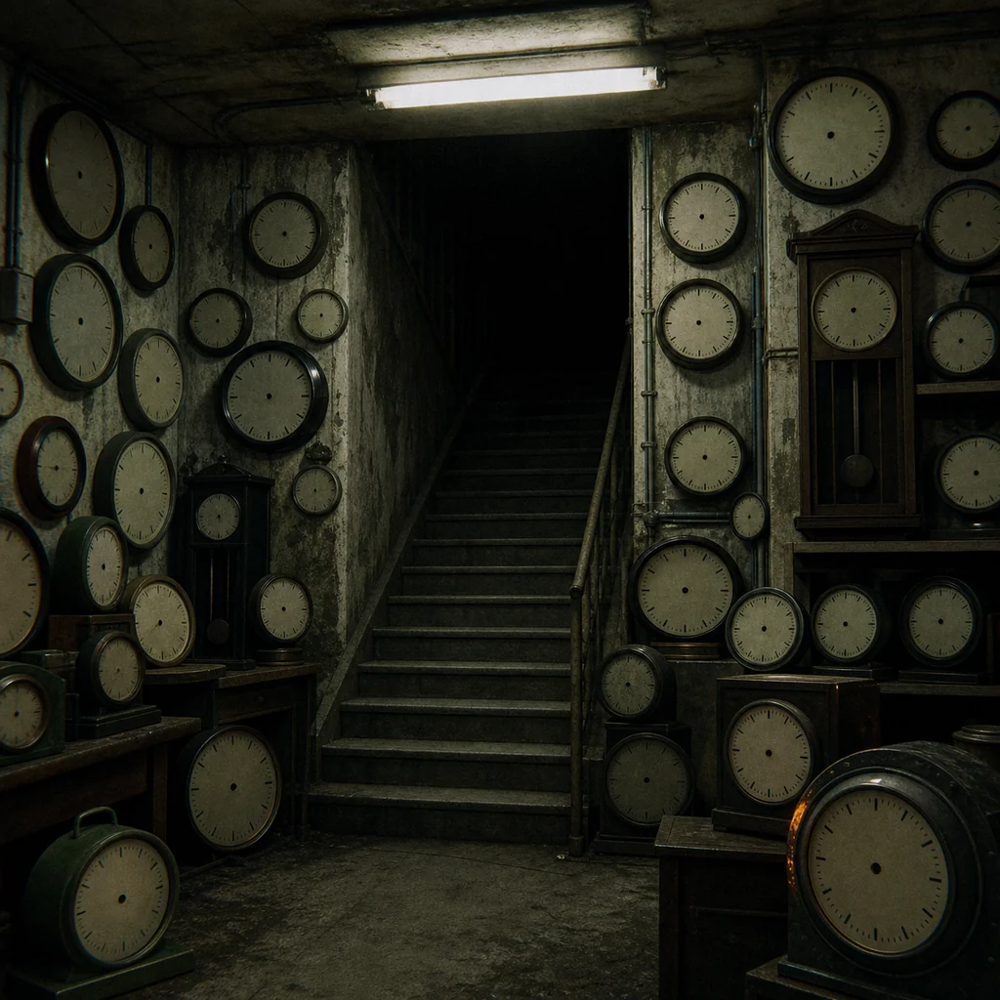

Up should mean exit. Here it means delay. The stairwell opens onto a landing with twelve identical clocks, all missing hands, all ticking at different speeds.
Someone has built a shrine from dead batteries, visitor badges, and snapped plastic wristbands. In the middle sits a note: YOU CANNOT OUTRUN A TIMER THAT WAS NEVER INSTALLED.
Touching the clocks does nothing. Counting them makes the ticking louder. Refusing to count them makes one clock stop in relief.
refuse the clocks politely